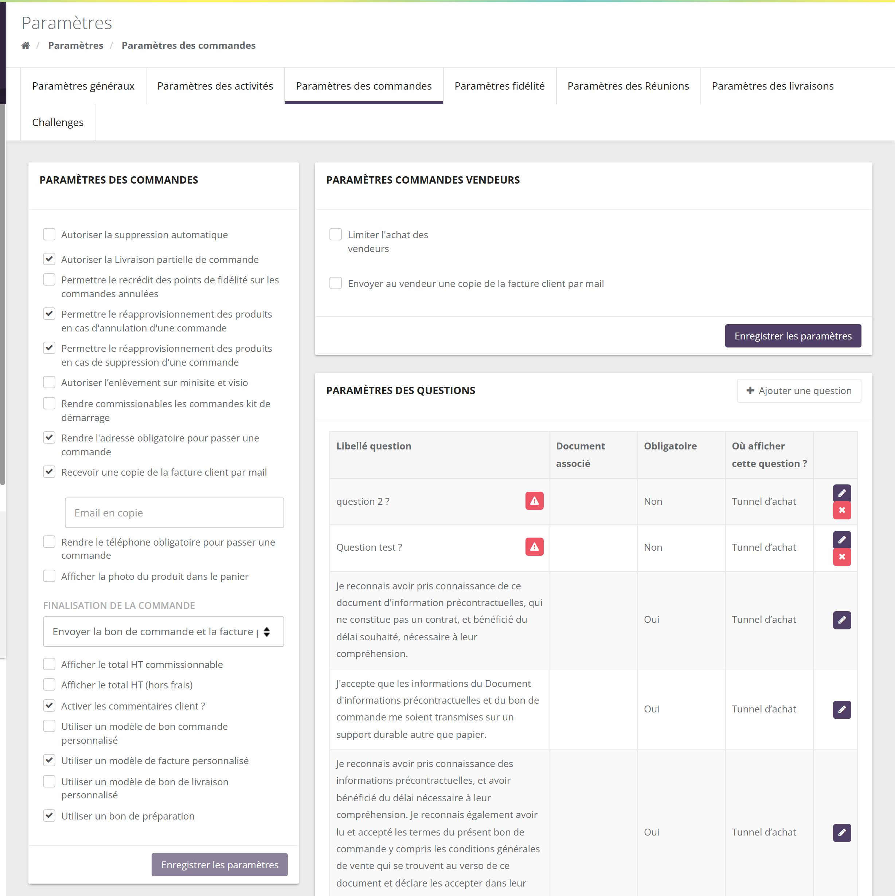
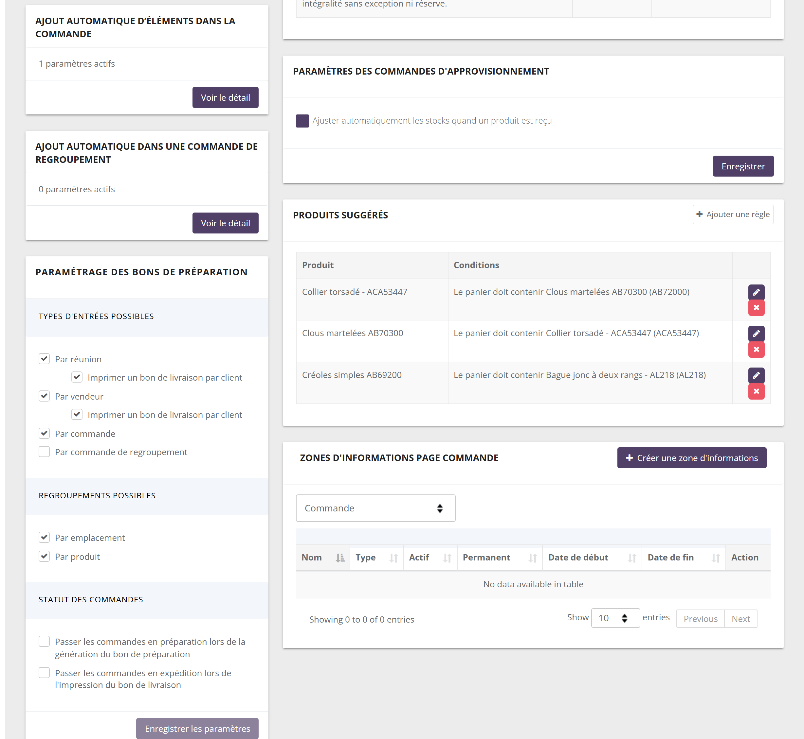
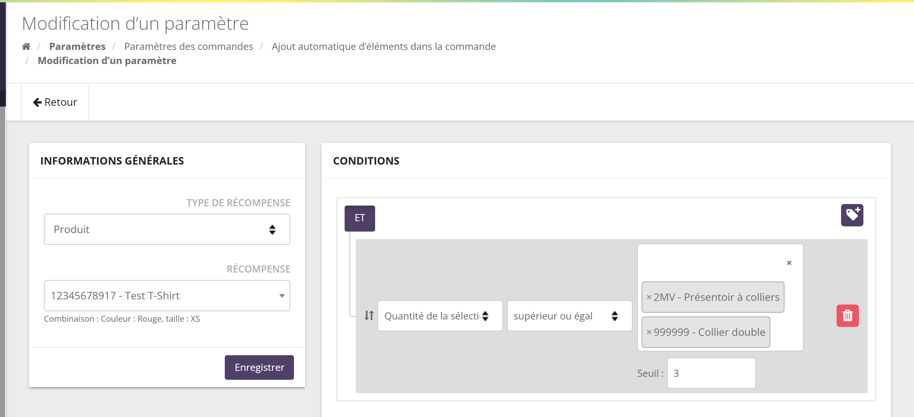
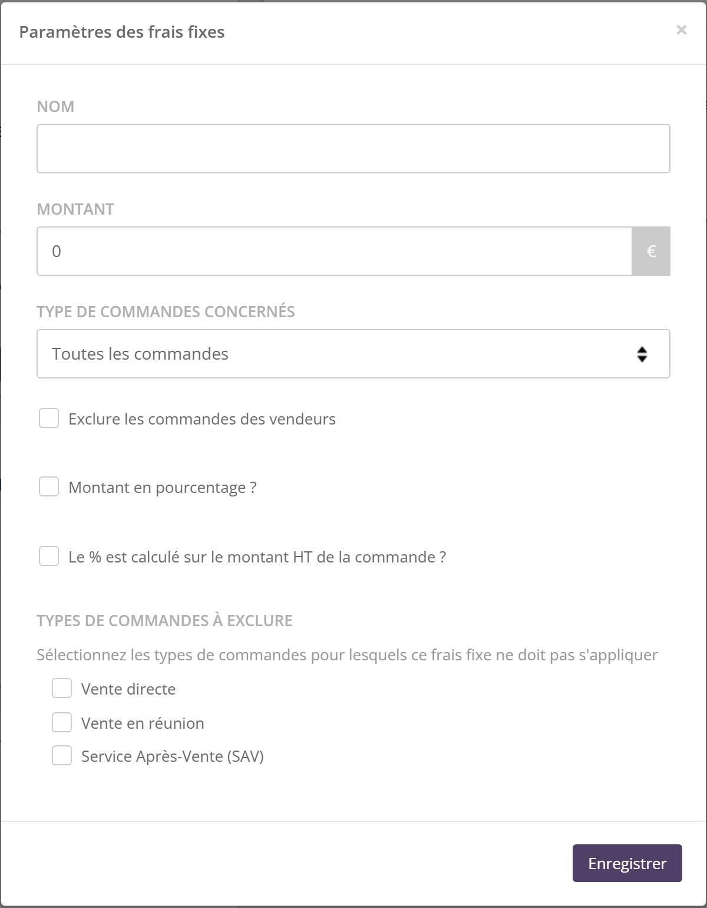
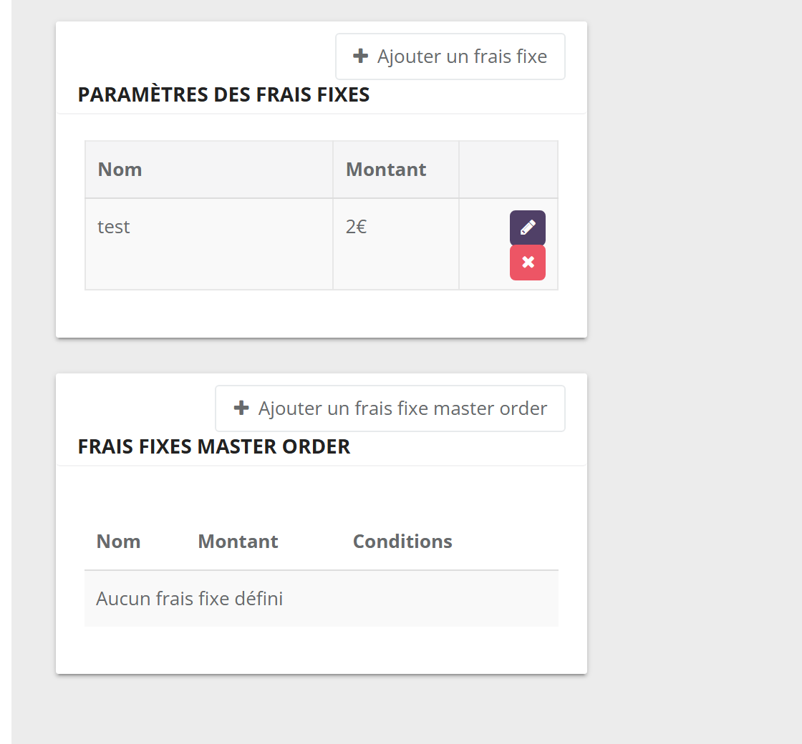
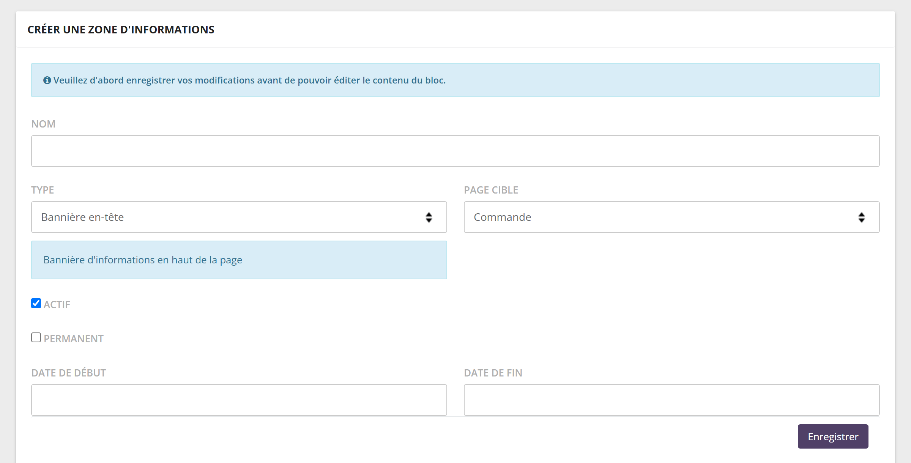

Vue d'ensemble
Cet écran regroupe les réglages qui s'appliquent à toutes les commandes de votre marque : ce qui est obligatoire pour commander, ce qui est envoyé à la cliente, ce qui s'ajoute automatiquement au panier, ce qui est demandé à la finalisation.

L'écran dit « vendeur » pour la conseillère et « client » pour la cliente.
L'écran est découpé en blocs, qui s'enregistrent séparément : chaque bloc a son propre bouton d'enregistrement ou sa propre fenêtre.
Le bloc Paramètres des commandes
Une liste de cases à cocher, un délai et une liste déroulante, enregistrés ensemble par Enregistrer les paramètres.
2.1 La suppression automatique des paniers
Cochez Autoriser la suppression automatique, puis indiquez le Délai de suppression en heures (48 heures minimum). Les commandes jamais payées créées depuis plus longtemps que ce délai sont supprimées automatiquement, avec les effets d'une suppression manuelle (voir les suppressions automatiques).
- Ne sont jamais concernées : les commandes payées ou partiellement payées, les commandes annulées, les kits de démarrage.
- Décocher la case remet le délai à 0 : la suppression est désactivée.
- Le délai part de la création de la commande, pas de sa dernière modification.
Délai de 168 heures (7 jours). Léa prépare le panier d'Inès le lundi 5 à 10 h et ne le finalise jamais. À partir du lundi 12 à 10 h, la commande peut être supprimée lors du prochain passage du traitement automatique.
Adoption : 19 marques sur 35 suppriment automatiquement leurs paniers, le plus souvent au bout de 48 heures (13 marques) ; les autres ont choisi de 3 à 30 jours.
2.2 Les options
Les cases sont listées dans l'ordre de leur nom technique, ce qui explique un ordre parfois surprenant. Certaines n'apparaissent que si l'équipe SellingAtHome les a ouvertes pour votre marque.
| Option (libellé exact) | Effet | Par défaut | Marques |
|---|---|---|---|
| Autoriser la Livraison partielle de commande | Permet d'expédier une commande en plusieurs fois (statut « Expédiée partiellement »). Visible si SellingAtHome l'a ouverte. | Non | 6 / 35 |
| Permettre le recrédit des points de fidélité sur les commandes annulées | À l'annulation, les points de fidélité dépensés dans la commande sont rendus à la cliente. | Non | 6 / 35 |
| Permettre le réapprovisionnement des produits en cas d'annulation d'une commande | Propose la remise en stock au moment d'annuler une commande payée. | Oui | 30 / 35 |
| Permettre le réapprovisionnement des produits en cas de suppression d'une commande | Remet en stock les produits d'une commande non payée supprimée (à la main ou automatiquement). | Oui | 24 / 35 |
| Autoriser l'enlèvement sur minisite et visio | Propose le retrait sur place dans les commandes passées en ligne (mini-boutique, réunion virtuelle). | Non | 1 / 35 |
| Rendre commissionables les commandes kit de démarrage | Les kits de démarrage comptent dans le chiffre d'affaires commissionnable. | Non | 1 / 35 |
| Rendre l'adresse obligatoire pour passer une commande | La cliente doit avoir une adresse pour commander. | Oui | 35 / 35 |
| Recevoir une copie de la facture client par mail | Voir ci-dessous. Fait apparaître le champ Email en copie. | Non | 4 / 35 |
| Rendre le téléphone obligatoire pour passer une commande | La cliente doit avoir un numéro de téléphone pour commander. | Non | 17 / 35 |
| Afficher la photo du produit dans le panier | Une miniature du produit accompagne chaque ligne du panier. | Non | 6 / 35 |
| Finalisation de la commande (liste) | Le ou les documents envoyés à la cliente. Voir ci-dessous. | Bon de commande | — |
| Afficher le total HT commissionnable | Affiche en plus le total hors taxes servant au calcul des commissions. | Non | 1 / 35 |
| Afficher le total HT (hors frais) | Affiche en plus le total hors taxes, frais exclus. | Non | 1 / 35 |
| Activer les commentaires client ? | Permet d'ajouter un commentaire de la cliente à la commande. | Oui | 34 / 35 |
| Utiliser un modèle de bon commande personnalisé | Le bon de commande utilise le modèle propre à votre marque (réalisé par SellingAtHome) au lieu du modèle standard. | Non | 31 / 35 |
| Utiliser un modèle de facture personnalisé | Même principe pour la facture. | Non | 8 / 35 |
| Utiliser un modèle de bon de livraison personnalisé | Même principe pour le bon de livraison. Visible si SellingAtHome l'a ouverte. | Non | 1 / 35 |
| Utiliser un bon de préparation | Active les bons de préparation et leur bloc de paramétrage (section 3). Visible si SellingAtHome l'a ouverte. | Non | 6 / 35 |
D'autres cases peuvent apparaître selon les modules de votre marque, par exemple les commandes cadeaux des challenges dans un regroupement.
2.3 Les documents envoyés et la copie de facture
La liste Finalisation de la commande choisit l'e-mail envoyé à la cliente quand sa commande est finalisée :
| Choix | Ce que reçoit la cliente | Marques |
|---|---|---|
| Envoyer le bon de commande par email au client (par défaut) | Le bon de commande en PDF. | 26 / 35 |
| Envoyer la facture par email au client | La facture en PDF. | 1 / 35 |
| Envoyer la bon de commande et la facture par email au client | Les deux documents. | 8 / 35 |
Chaque choix correspond à un modèle d'e-mail (Paramètres › Templates email). Si la cliente s'est désabonnée de ce modèle, elle ne le reçoit pas.
Recevoir une copie de la facture client par mail : l'adresse saisie dans Email en copie est mise en copie de cet e-mail. Malgré son libellé, la copie porte sur le document choisi ci-dessus : bon de commande, facture, ou les deux. Utile pour archiver tous les documents dans une boîte de la comptabilité.
Les bons de préparation
Le bloc Paramétrage des bons de préparation n'apparaît que si SellingAtHome a ouvert la fonction pour votre marque et que la case Utiliser un bon de préparation est cochée (rechargez la page après l'avoir cochée). Les bons de préparation se génèrent ensuite depuis la liste des commandes, bouton « Bons de préparation ».

| Rubrique | Options |
|---|---|
| Types d'entrées possibles | Les façons de sélectionner ce qu'on prépare : Par réunion, Par vendeur (chacune avec « Imprimer un bon de livraison par client »), Par commande, Par commande de regroupement (si le module de regroupement est actif). |
| Regroupements possibles | Par emplacement (ordre des emplacements de stockage), Par produit (quantités cumulées). |
| Statut des commandes | Passer les commandes en préparation lors de la génération du bon de préparation ; Passer les commandes en expédition lors de l'impression du bon de livraison (cochée par défaut). |
Les commandes des conseillères
Le bloc Paramètres commandes vendeurs concerne les commandes qu'une conseillère passe pour elle-même, avec son compte client.
4.1 Le plafond d'achat
Cochez Limiter l'achat des vendeurs, puis renseignez :
- Montant maximum : le total TTC autorisé (après remises, points et porte-monnaie) ;
- Durée et Echelle (Semaines, Mois, Années) : la période glissante observée, qui se termine aujourd'hui.
SellingAtHome additionne les commandes payées, non annulées, dont la conseillère est la cliente, sur cette période. Le plafond est bloquant :
- si le total dépasse déjà le maximum, la conseillère ne peut pas créer de nouvelle commande pour elle-même (message « limite atteinte ») ;
- si elle augmente une quantité et que le total (commandes payées + commande en cours) dépasserait le maximum, la quantité revient à sa valeur précédente.
Atteindre exactement le maximum est autorisé ; c'est le dépassement qui bloque.
Maximum 500 €, durée 3, échelle Mois. Le 15 octobre, Chloé a payé 420 € de commandes pour elle depuis le 15 juillet. Elle crée une nouvelle commande (autorisé : 420 € ne dépasse pas 500 €) et y met un produit à 60 € (480 €). En passant la quantité à 2, le total atteindrait 540 € : la quantité reste à 1.
Aucune marque n'utilise le plafond aujourd'hui.
4.2 La copie de facture à la conseillère
Envoyer au vendeur une copie de la facture client par mail met la conseillère en copie de l'e-mail de documents envoyé à sa cliente (voir Finalisation de la commande). 7 marques l'ont activé.
Ce bloc a son propre bouton Enregistrer les paramètres.
Les cadeaux automatiques
Le bloc Ajout automatique d'éléments dans la commande offre un produit dès qu'une commande remplit des conditions : un montant, une période, un produit dans le panier… Le produit est ajouté à 0 €, sans action de la conseillère.
5.1 Créer une règle
- Dans le bloc, cliquez sur Voir le détail : la liste des règles s'affiche.
- Ajoutez un paramètre. Dans Informations générales, le Type de récompense est « Produit » ; choisissez la Récompense (et sa déclinaison, s'il y en a).
- Dans Conditions, ajoutez une ou plusieurs conditions. Elles sont reliées par « ET » : toutes doivent être remplies.
- Cliquez sur Enregistrer.

5.2 Les conditions
| Condition | Ce qu'elle vérifie | Marques |
|---|---|---|
| Montant TTC de la commande | Le montant après remises, points et porte-monnaie. | 13 |
| Date | Une date ou une période (bornes incluses), au jour près. | 12 |
| Le panier | La présence de produits, avec une quantité minimale. | 8 |
| Commande d'un vendeur | La commande est (ou n'est pas) celle d'une conseillère pour elle-même. | 6 |
| Type de commande | Vente en réunion, vente directe… Une commande rangée dans un regroupement a le type « … dans comm. de regroupement ». | 4 |
| Rôle client | Le rôle de la cliente. | 2 |
| Produits dans le panier jamais commandés | Un produit que la cliente n'a jamais commandé. | 2 |
| Nouveau client / Nouveau client pour le catalogue | Première commande de la cliente (au total, ou dans le catalogue). | 1 |
| Quantité / Montant TTC de la sélection de produits | Le nombre d'articles, ou leur montant, parmi une liste de produits (seuil). | — |
| Quantité / Montant TTC de la sélection de catégories | Même principe sur des catégories. | — |
| Catalogue, Pays | Le catalogue de la commande, le pays. | — |
5.3 Quand le cadeau s'ajoute (et disparaît)
- Les règles sont recalculées à chaque modification d'une commande non payée. Le cadeau apparaît dès que les conditions sont remplies et disparaît si elles ne le sont plus (un produit retiré fait repasser sous le seuil).
- Une règle donne une seule unité du produit, quelle que soit l'ampleur du dépassement. Plusieurs règles valides donnent plusieurs cadeaux.
- Le produit doit être en stock (ou commandable hors stock), sinon il n'est pas ajouté.
- Une fois la commande payée, plus rien ne bouge.
Règle : « Montant TTC de la commande » supérieur ou égal à 80 € ET « Date » du 1er au 31 décembre → une trousse offerte. Le 10 décembre, Zoé commande pour 72 € auprès de Manon : pas de cadeau. Elle ajoute un bracelet à 15 € (87 €) : la trousse s'ajoute à 0 €. Elle retire le bracelet : la trousse disparaît.
Les cadeaux propres aux commandes de regroupement (bloc « Ajout automatique dans une commande de regroupement ») fonctionnent autrement : voir les commandes de regroupement.
Les produits suggérés
Le bloc Produits suggérés fonctionne comme les cadeaux automatiques, mais ne met rien dans le panier : il propose un produit. Chaque règle associe un produit à des conditions (Montant TTC de la commande, Date, Le panier, Type de commande, Commande d'un vendeur, Nouveau client, Catalogue, Pays). Bouton Ajouter une règle ; crayon pour modifier, croix pour supprimer.
Quand les conditions sont remplies, le produit apparaît dans l'encart Produits suggérés de la commande en cours, côté conseillère (et côté marque), avec un bouton pour l'ajouter. Une commande payée n'affiche plus de suggestion.
Règle : produit « Clous martelés », condition « Le panier doit contenir Collier torsadé ». Quand Léa ajoute le collier à la commande de Camille, les clous lui sont proposés : un clic pour les ajouter.
6 marques utilisent les produits suggérés (25 règles). La suggestion ne vérifie ni le stock ni la publication du produit.
Les frais fixes
7.1 Sur les commandes
Le bloc Paramètres des frais fixes ajoute automatiquement un montant aux commandes : frais de dossier, de gestion, contribution… Bouton Ajouter un frais fixe.

Nom et Montant : le libellé affiché sur la commande et la valeur.
Type de commandes concernés : Toutes les commandes, Commandes en vente directe, Commandes en vente en réunion, Commandes Web.
Exclure les commandes des vendeurs : pas de frais quand la conseillère commande pour elle-même.
Montant en pourcentage ? : le montant devient un pourcentage de la commande (après remises), calculé sur le TTC, ou sur le HT si la case suivante est cochée.
Types de commandes à exclure : affine la sélection.
- Le frais est ajouté aux commandes non payées, à chaque modification ; une commande payée garde ses frais.
- Le montant est TTC, sauf si la case « Le % est calculé sur le montant HT… » est cochée : il est alors considéré HT.
- Supprimer un frais le retire des commandes non payées à leur prochaine modification.
« Toutes les commandes » exclut les commandes web. Pour elles, créez un frais « Commandes Web ».
Frais « Frais de dossier », 2 €, « Commandes en vente en réunion », commandes des vendeurs exclues. La commande d'Emma chez Jade (65 €) passe à 67 € ; la commande de Léa pour elle-même n'a pas de frais.

3 marques utilisent des frais fixes.
7.2 Sur les commandes de regroupement
Si le module de regroupement est actif, le bloc Frais fixes master order ajoute un montant à chaque regroupement, avec ses propres conditions. Voir les commandes de regroupement.
Les questions
Le bloc Paramètres des questions ajoute des cases à cocher que la cliente coche (ou non) au moment de finaliser sa commande, ou dans son formulaire d'inscription.
La question est associée à un document ? : un lien vers un document (CGV, document précontractuel…) suit le libellé ; renseignez son Adresse URL du document et la Phrase associée au lien.
Question obligatoire ? : la case doit être cochée pour continuer.
Où afficher cette question ? : Tunnel d'achat (finalisation de la commande) ou Formulaire d'inscription (jamais obligatoire).
Le Libellé de la question se saisit dans chaque langue. Un triangle rouge signale une question non traduite partout.
- La réponse est toujours oui ou non (case cochée ou non).
- Les questions légales fournies par SellingAtHome (document d'information précontractuelle, dématérialisation) sont obligatoires et ne peuvent pas être supprimées ; seule l'adresse du document est modifiable.
- Supprimer une question la retire des parcours ; les réponses déjà données restent en base.
Question « Souhaitez-vous être contactée pour devenir conseillère ? », non obligatoire, tunnel d'achat. Camille coche la case en finalisant sa commande.
Suivre les réponses :
Le rapport affiche, pour chaque question, le nombre de réponses « oui » et « non », depuis le début (sans filtre de date). 14 marques ont créé leurs propres questions.
Les zones d'informations de la page commande
Le bloc Zones d'informations page commande affiche un message (texte, liens, images) aux conseillères sur la page de saisie des commandes : une offre du mois, un rappel logistique, une date limite.

- Cliquez sur Créer une zone d'informations.
- Donnez un Nom (interne, jamais montré aux conseillères).
- Choisissez le Type, c'est-à-dire l'emplacement : Bannière en-tête (haut de page), Bloc central (dans les informations de la commande, 4 lignes maximum), Bannière pied de page (bas de page).
- Si votre marque utilise les regroupements, choisissez la Page cible : la page d'une commande, celle d'une commande de regroupement, ou les deux.
- Réglez Actif, et soit Permanent, soit une Date de début et une Date de fin.
- Enregistrez, puis rouvrez la zone pour saisir son contenu dans chaque langue. La conseillère voit le contenu de sa langue.
Les dates n'ont pas d'heure : chacune vaut minuit au début du jour choisi. La zone apparaît donc le jour de début à 0 h, et disparaît le jour de fin à 0 h : le jour de fin n'est pas inclus.
Pour afficher une zone tout le mois de décembre, saisissez du 1er décembre au 1er janvier.
Avec une date de fin au 31 décembre, la zone n'est plus visible le 31. Autres règles : une zone « Permanent » ignore les dates ; une zone non permanente sans dates s'affiche aussi en permanence ; une zone non « Actif » n'est jamais affichée. Rien n'empêche de saisir une fin avant le début : vérifiez vos dates.
Dans la liste, la liste déroulante filtre par page cible et le bouton d'action permet de modifier, activer/désactiver ou supprimer une zone. 4 marques ont créé des zones d'informations.
Les commandes d'approvisionnement
Si votre marque a le module Approvisionnement, le bloc Paramètres des commandes d'approvisionnement contient une case : Ajuster automatiquement les stocks quand un produit est reçu (cochée par défaut). Elle a son propre bouton Enregistrer. Voir Catalogue.
Points d'attention
- Un bouton par bloc : enregistrer un bloc n'enregistre pas les autres.
- Copie de facture : la copie suit le choix de « Finalisation de la commande » (bon de commande, facture ou les deux).
- Cadeaux automatiques : une règle sans date reste active indéfiniment. Pensez à borner les opérations commerciales.
- Frais fixes « Toutes les commandes » : les commandes web ne sont pas concernées.
- Zones d'informations : la date de fin est exclue.
- Suppression automatique : elle ne touche que les commandes jamais payées, mais elle est définitive. Prévenez vos conseillères du délai.
Questions fréquentes
Le cadeau automatique ne s'ajoute pas.
Vérifiez que toutes les conditions sont remplies (elles sont reliées par « ET »), que le produit offert est en stock, et que la commande n'est pas déjà payée. Le cadeau se recalcule à la prochaine modification du panier.
Ma zone d'informations n'apparaît plus le dernier jour.
C'est normal : la date de fin est exclue. Mettez le lendemain du dernier jour voulu.
Je ne vois pas le bloc des bons de préparation.
Cochez « Utiliser un bon de préparation », enregistrez et rechargez la page. Si la case n'existe pas, la fonction n'est pas ouverte pour votre marque : contactez l'équipe SellingAtHome.
Où voir les réponses aux questions ?
Rapports › Réponses aux questions.
Une conseillère dit qu'elle ne peut plus commander pour elle-même.
Le plafond d'achat est peut-être atteint : comparez ses commandes payées sur la période glissante au montant maximum.